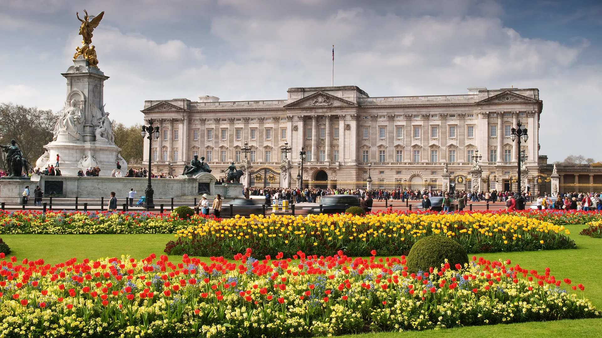
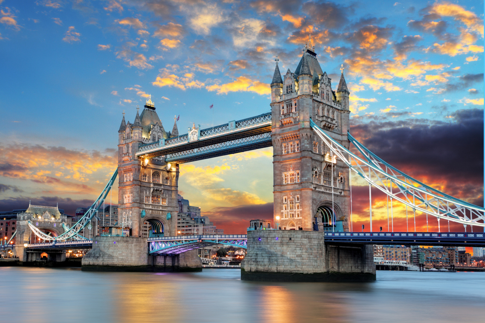
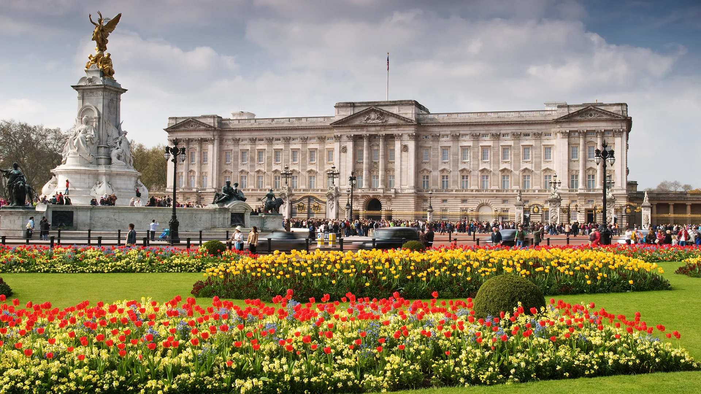
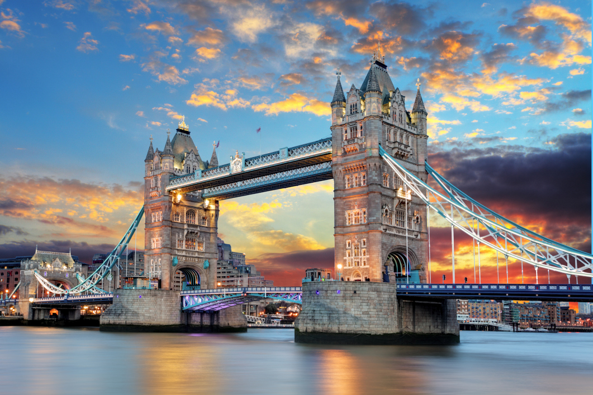

London Itinerary: 5 Days of Discovery
London blends royal tradition with modern flair. Here's your perfect 5-day guide to iconic landmarks, charming neighborhoods, and delicious British cuisine!
Day 1: Royal London
- Morning: Visit Buckingham Palace and watch the Changing of the Guard.
- Afternoon: Explore Westminster Abbey and Big Ben.
- Evening: Ride the London Eye for stunning views.
- Food: Try classic fish and chips at a local pub.
Day 2: Museum Day
- Morning: Visit the British Museum.
- Afternoon: Explore the Natural History Museum or V&A Museum.
- Evening: Stroll through South Kensington.
- Food: Enjoy afternoon tea with scones and clotted cream.
Day 3: Markets & Culture
- Morning: Wander Borough Market for food stalls.
- Afternoon: Visit Tower of London and see the Crown Jewels.
- Evening: Walk across Tower Bridge.
- Food: Try pies and mash at a traditional shop.
Day 4: Parks & Palaces
- Morning: Relax in Hyde Park.
- Afternoon: Explore Kensington Palace or shop at Harrods.
- Evening: Catch a West End show.
- Food: Enjoy a pre-theatre dinner in Covent Garden.
Day 5: Local Life
- Morning: Visit Notting Hill and browse Portobello Road Market.
- Afternoon: Explore Camden Market and Regent’s Canal.
- Evening: Sunset views from Primrose Hill.
- Food: Taste street food from Camden’s global stalls.
Bonus (Optional Day 6-7 ideas): Day trips to Windsor Castle or Stonehenge.

 


